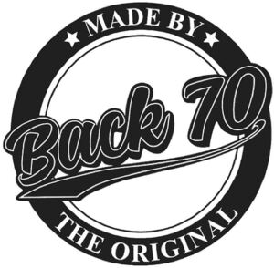

Trade Mark Journal No.2026/012 20 March 2026
WO0000001905831 (18,25)
Office of origin: Italy
Date of International Registration:2 December 2025
Date of designation in the UK:
2 December 2025

The trademark is constituted by a circular frame in the center of which, partially and obliquely superimposed, is the wording BACK 70 in fancy characters with a curved underlining, the wording MADE BY in fancy characters being placed within the upper part of the frame and between two stylized figures of stars and the wording THE ORIGINAL being placed within the lower part of the frame.
International priority date claimed: 24 July 2025
(Italy)
(302025000119116)
- Class 18
- Bags for sports; small suitcases; hat boxes of leather; luggage, bags, wallets and carrying bags; briefcases and attaché cases; vanity cases, not fitted; beach bags; handbags; school bags; belt bags; shoulder bags; clutch bags [hand bags]; document cases; card cases [notecases]; rucksacks; briefcase-type portfolios; small coin purses; pocket wallets; key cases; credit card cases [wallets]; haversacks; bags for climbers; chain mesh purses; bags for campers; game bags [hunting accessories]; school backpacks; all-purpose sports bags; sling bags for carrying infants; leather, unworked or semi-worked; bags; travelling bags; duffle bags; travelling trunks; garment bags for travel; shoe bags for travel; suitcases; carry-on bags; slings for carrying infants; suitcase handles; leather and imitations of leather; animal skins and hides; luggage and carrying bags; umbrellas and parasols; walking sticks; whips, harness and saddlery; collars, leashes and clothing for animals.
- Class 25
- Handcrafted footwear; dress shoes; leisure footwear; footwear for sports; sandals; boots; gymnastic shoes; wooden shoes; slippers; flip-flops [footwear]; inner soles; footwear uppers; soles for shoes; shoe inserts for non-orthopaedic purposes; fittings of metal for footwear; clothing for sports; casual wear; formal wear; weatherproof clothing; leisure wear; clothing for men, women and children; clothing of imitations of leather; clothing of leather; trousers; dress pants; leggings [trousers]; skorts; wind pants; bloomers; slacks; capri pants; casual pants; short trousers; hunting pants; jodhpurs; golf trousers; rain pants; sweatpants; yoga pants; stretch pants; waterproof pants [trousers]; balloon pants; cargo pants; climbing pants; skirts; miniskirts; knitwear [clothing]; sweaters; shirts; tee-shirts; combinations [clothing]; jackets [clothing]; heavy jackets; parkas; pelisses; body warmers; ponchos; shoulder wraps [clothing]; padded jackets; reversible jackets; sports jackets; sport coats; dusters [clothing]; fur stoles; coats; shawls; scarves; overcoats; muffs [clothing]; pelerines; leggings [leg warmers]; earbands [clothing]; detachable collars; bandanas [neckerchiefs]; foulards; bathing suits; beach clothes; sundresses; bath robes; underwear; bodies [clothing]; pyjamas; chemises; stockings; socks; tights; layettes [clothing]; braces [suspenders] for clothing; belts [clothing]; neckties; berets; hats; gloves; visor caps; clothing, footwear, headwear.
BACK 70 SRL
Representative: Dr. Modiano & Associati SpA, Via Meravigli 16, I-20123 Milano, ITALY